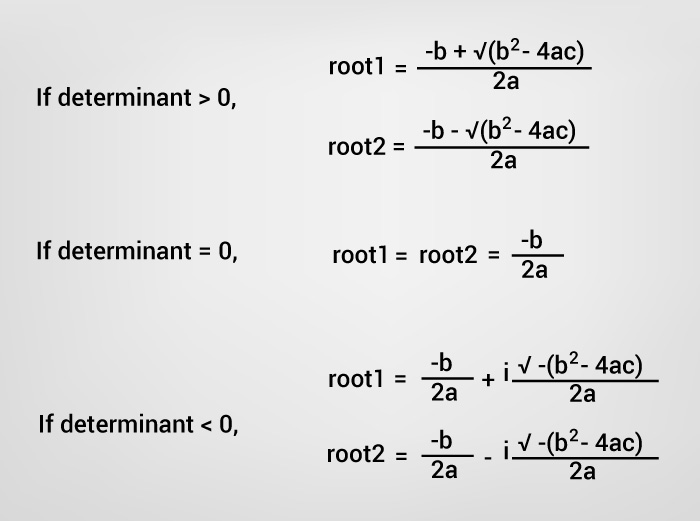

To understand this example, you should have the knowledge of following C programming topics:
- C Programming Operators
- C if...else Statement
The standard form of a quadratic equation is:
ax2 + bx + c = 0, where a, b and c are real numbers and a ≠ 0
The term b2-4ac is known as the determinant of a quadratic equation. The determinant tells the nature of the roots.
- If determinant is greater than 0, the roots are real and different.
- If determinant is equal to 0, the roots are real and equal.
- If determinant is less than 0, the roots are complex and different.

Example: Program to Find Roots of a Quadratic Equation
#include <stdio.h>
#include <math.h>
int main()
{
double a, b, c, determinant, root1,root2, realPart, imaginaryPart;
printf("Enter coefficients a, b and c: ");
scanf("%lf %lf %lf",&a, &b, &c);
determinant = b*b-4*a*c;
// condition for real and different roots
if (determinant > 0)
{
// sqrt() function returns square root
root1 = (-b+sqrt(determinant))/(2*a);
root2 = (-b-sqrt(determinant))/(2*a);
printf("root1 = %.2lf and root2 = %.2lf",root1 , root2);
}
//condition for real and equal roots
else if (determinant == 0)
{
root1 = root2 = -b/(2*a);
printf("root1 = root2 = %.2lf;", root1);
}
// if roots are not real
else
{
realPart = -b/(2*a);
imaginaryPart = sqrt(-determinant)/(2*a);
printf("root1 = %.2lf+%.2lfi and root2 = %.2f-%.2fi", realPart, imaginaryPart, realPart, imaginaryPart);
}
return 0;
} Output
Enter coefficients a, b and c: 2.3 4 5.6 Roots are: -0.87+1.30i and -0.87-1.30i
In this program, library function sqrt() is used to find the square root of a number. To learn more, visit: sqrt() function.